Slide 1 of 14 · Write Path, Read Path, Compactions
Bigtable, Visually · 08 Write and read paths
Write Path, Read Path, Compactions
How one tablet server takes writes, answers reads, and keeps its files tidy
DECK 08 · Inside the machine

Why every write is logged before memory

How a read merges memory and files
What the three compactions do
How a tablet survives a server crash
This deck opens up a single tablet server and follows what it does with your data. Deck 07 ended when a request reached the right tablet server; this deck starts there. You will see four things. First, the write path: every write is appended to a commit log in GFS before it is placed in memory, and only then does the client hear "ok". Second, the read path: a read combines the in-memory buffer with every file of the tablet into one merged view, where the newest version wins and deletion markers hide old data. Third, compactions: three kinds of background job (minor, merging and major) that keep memory small, recovery short, reads fast, and that finally remove deleted data. Fourth, recovery: how a new server rebuilds a tablet after a crash using only what is in GFS and METADATA. The running example is a fictional payments platform: one row per card payment, keyed acct#<account>#<reverse timestamp>. Numbers are from the 2006 paper unless marked "Cloud Bigtable, 2026".
Slide 2 of 14 · A tablet lives in three places
Bigtable, Visually · 08 Write and read paths
CONCEPT 1 · WHERE DATA LIVES
A tablet lives in three places

RAM
wiped by a crash
Memtable
newest writes, sorted
Indexes, caches
rebuildable
GFS
3 copies each
Commit log
append-only redo records
SST 1
SST 2
SST 3
sorted, never edited
log rebuilds it
flushed when full
write path
lost in a crash
survives a crash
IN THE REAL WORLD
A document you edit online
Your laptop keeps the open file in memory and saves every edit to the cloud. If it dies, any laptop reopens the file.
laptop memory = memtable
cloud copy = log + SSTables
0
committed writes lost in a server crash
2
A tablet's data lives in three structures. The memtable is a sorted buffer in the tablet server's RAM holding the most recent writes. The commit log is an append-only file of redo records in GFS; a redo record describes one change precisely enough to apply it again after a crash. The SSTables hold older data: sorted files in GFS that are never modified after they are written. The rule behind the rest of this deck: everything a tablet must keep lives in GFS, and RAM holds nothing that cannot be rebuilt from GFS. So a dead tablet server loses no committed data, and moving a tablet copies no data. The memtable is flushed to a new SSTable when full (concept 8) and rebuilt from the log after a crash (concept 11). Detail: the paper's figure draws one log per tablet, but each server really keeps one commit log shared by all its tablets, typically 10 to 1,000 in 2006 (deck 09 explains why). Cloud Bigtable, 2026: nodes hold no data; writes go to Colossus's shared log.
Slide 3 of 14 · Log first, then memory, then “ok”
Bigtable, Visually · 08 Write and read paths
CONCEPT 2 · THE WRITE PATH
Log first, then memory, then “ok”
One card payment:
acct#8812#…5807 · 42.50 EUR · 5 cells
W
tablet server
Well-formed?
Do the table and families exist?
A
Chubby, cached
Authorized?
Is this client a writer?
L
GFS
Log
One append: the write is committed
M
RAM
Memtable
Sorted insert: now readable
A
client
Ack
The client hears “ok”
commit point: durable from here
MNEMONIC
We Always Log Mutations Ahead

IN THE REAL WORLD
A bank teller’s day book
Each deposit goes in the day book first, then on the customer’s card. Lose the cards and the book rebuilds them.
3
The paper's write path, slowed down. The client library already knows which tablet server holds the row (deck 07), so the request goes straight there; the master is not involved. The example is one card payment: five cells in one row, applied together or not at all. W, well-formed: the table and column families exist (the paper only says "well-formed"; the examples are ours). A, authorized: the writers list lives in a Chubby file, but the server keeps a cached copy that Chubby invalidates on change, so this is almost always a memory lookup. L, log: the mutation is appended to the commit log in GFS; when the append returns, the write is committed. M, memtable: only now are the cells inserted at their sorted position, and reads can see them. A, ack: the client hears "ok". No SSTable was read or written. The paper does not pin down the exact moment of the reply, but it cannot come before the log append.
Slide 4 of 14 · Nothing is visible until it is durable
Bigtable, Visually · 08 Write and read paths
CONCEPT 3 · DURABLE BEFORE VISIBLE
Nothing is visible until it is durable
Crash here: write lost
but nobody saw it or heard “ok”
Crash here: nothing lost
the next server replays the log
time
commit point
Request arrives
Checks pass
Log append returns
Memtable insert: now visible
“ok” to the client
THE WRONG ORDER: MEMORY FIRST
Insert in memtable
A reader sees 42.50
Crash before logging
Payment gone
A reader saw a payment that then vanished.

IN THE REAL WORLD
Online banking
Your app shows a transfer only after the bank’s ledger has recorded it, so you never see money that a crash could take back.
4
The moment the log append returns is the commit point. Before it, a crash can lose the write, but nobody has seen it and nobody was told "ok". After it, the write survives any crash of this server, because the replacement server replays the log. The memtable insert (which makes the write visible) and the "ok" both come after the commit point, so Bigtable never shows or promises anything a crash could take back. Why not memory first? A crash between the two steps would lose the write, and a reader might already have seen it. Logging first rules this out: anything in the memtable is already in the log. This is classic write-ahead logging. One awkward case: a crash after the commit point but before the "ok". The write is safe, but the client retries. Repeating a set with a fixed timestamp is harmless; an increment would add twice. So Cloud Bigtable's newer Python data client retries a write automatically only when every cell carries a fixed client-side timestamp, and never retries increments or conditional writes.
Slide 7 of 14 · A delete writes a marker, not an erase
Bigtable, Visually · 08 Write and read paths
CONCEPT 6 · DELETES
A delete writes a marker, not an erase
IN THE REAL WORLD
A library’s WITHDRAWN stamp
The catalogue card is stamped WITHDRAWN. Searches stop showing the book at once, but it stays on the shelf until the yearly clear-out.
WITHDRAWN
Row acct#1003, column risk:note
Memtable
newest
× delete @t10
SSTable 1
never edited
"call back" @t2
hides
read
Returns nothing
the marker itself is never returned

Still on disk. “call back” stays in SSTable 1, because files are never edited. Only a major compaction removes it (concept 10).
7
SSTables are never edited, so a delete cannot erase bytes inside an old file. Instead the delete is written like any other mutation (logged, then put in the memtable) as a deletion entry, often called a tombstone: a record saying "older data for this cell is deleted". During a read, the merge meets the tombstone (t10) before the older value (t2) and hides it; the marker itself is never returned. So readers see the delete at once. But the value's bytes still sit in SSTable 1. Tombstones move into SSTables at the next minor compaction and disappear, with the data they hide, only in a major compaction (concept 10). The example: a risk team once stored a free-text note on account acct#1003, and a data-retention rule now requires it to be erased. Common mistake: "deleting data frees space". Not at first: a delete adds a small entry. Cloud Bigtable's documentation says the same: storage goes up after deletes until compaction catches up.
Slide 8 of 14 · Without compaction, four things pile up
Bigtable, Visually · 08 Write and read paths
CONCEPT 7 · WHY COMPACT
Without compaction, four things pile up

Memory fills up
Up to 1,000 growing memtables per server (2006)
fixed by
Minor compaction
Recovery slows
More and more log to replay after a crash
fixed by
Minor compaction
Reads slow down
Every read must merge every file
fixed by
Merging compaction
Deleted data stays
Files are never edited, so old bytes remain
fixed by
Major compaction

IN THE REAL WORLD
An office that never files anything
The desk overflows, finding one letter means checking every pile, and nothing is ever shredded. Compaction is the filing clerk.
8
Suppose a tablet server only ever appended to the log and inserted into the memtable. Four problems would grow without limit. Memory: one server holds a growing memtable for each of its tablets (10 to 1,000 per server in 2006; the paper's benchmark servers used 1 GB of memory). Recovery: a new owner replays the commit log from the tablet's redo point, a bookmark meaning "everything before here is already in SSTables"; if nothing moves into SSTables, the bookmark never moves. Reads: writing the memtable out as a new file whenever it is big adds a file each time, and every read must merge them all; fifty files means fifty sources. Deleted data: files are immutable, so a delete only adds a marker and the old bytes keep using disk. A compaction is background work that writes a tablet's data into new SSTables. The paper (section 5.4) defines three kinds, each aimed at some of these problems, and reads and writes continue while they run.
Slide 9 of 14 · Minor compaction: memtable becomes a file
Bigtable, Visually · 08 Write and read paths
CONCEPT 8 · MINOR COMPACTION
Minor compaction: memtable becomes a file
RAM
New memtable
takes every new write
Frozen memtable
full, now read-only

GFS
S1
S2
S3
S4 new
written out in one pass
Commit log
r1
r2
r3
r4
r5
r6
r7
r8
r9
r10
redo point moves: only r8–r10 left to replay
write path
new after this compaction
IN THE REAL WORLD
A waiter’s order pad
When the pad is full, the waiter starts a fresh one and files the old pad. Orders never stop.
full pad = frozen memtable
filed pad = new SSTable
RESULT

Memory freed
Shorter replay after a crash

One more file per read
9
A minor compaction turns the memtable into a new SSTable. The trigger is size; the paper does not give the threshold. Freeze and swap: the full memtable is frozen and a new memtable takes every new write, so writers never wait. Write out: the frozen memtable is already sorted, so it is streamed into a new SSTable, S4, in one sequential pass. Meanwhile reads merge the new memtable, the frozen one and S1 to S3. Register: METADATA now lists S4 and the redo point moves past the log records S4 holds, so a crash would replay only a short tail. Then the frozen memtable's memory is freed. The paper's two goals: less memory, and less log to read during recovery. It does not reduce files: every minor compaction adds one. A crash mid-flush loses nothing, because every frozen entry is still in the log. Minor compactions also make planned tablet moves fast (deck 09). Name trap: HBase calls this a "flush"; HBase's "minor compaction" is something else.
Slide 10 of 14 · Merging compaction: a few files become one
Bigtable, Visually · 08 Write and read paths
CONCEPT 9 · MERGING COMPACTION
Merging compaction: a few files become one
acct#1001
acct#1002
acct#1003
acct#1004
acct#1005
Memtable
SSTable 4
SSTable 3
v9
v10
v7
× del
v4
v5
v8
merge
SSTable 5
v7
v9
× del
v5
v10
SSTable 2 not merged
v2
Struck = older version, dropped by the GC rule “keep 1 version”
3 inputs → 1 file
× must stay to keep hiding v2

IN THE REAL WORLD
Your monthly card statement
A month of receipts becomes one sorted list. A refund line stays on it, because last month’s statement still shows the original charge.
10
Every minor compaction adds a file, so without something else the files a read must merge would grow without limit. Merging everything after every flush would rewrite the whole tablet (100 to 200 MB in the paper) again and again. The answer is in between. A merging compaction periodically takes the memtable plus a few SSTables (here the memtable, S4 and S3; S2 and S1 are left out) and merges them into one new SSTable, S5, with the same k-way merge that reads use. Row acct#1002 appears twice; this family's garbage-collection rule keeps one version, so v9 is written and v4 dropped (Cloud Bigtable's docs say GC runs during compaction; the paper does not say when). The deletion entry for acct#1003 must be copied into S5, because S2 is not an input and still holds an older value. The rule: a compaction must never change what a read returns, GC rules aside. Afterwards a read merges 4 sources (new memtable, S5, S2, S1) instead of 5. Keys are shortened; v-numbers are version labels (higher = later).
Slide 11 of 14 · Major compaction makes deletes final
Bigtable, Visually · 08 Write and read paths
CONCEPT 10 · MAJOR COMPACTION
Major compaction makes deletes final
Tablet files
Reads see it?
Bytes in GFS?
1 Written
S1: note
yes
yes
2 Deleted
mem: ×
S1: note
no
yes
3 Flushed
S2: ×
S1: note
no
yes
4 Merged
S4: ×
S1: note
no
yes
5 Major
S5: clean
S1: unlisted
no
yes
6 Swept
master deletes S1–S4
no
gone

WATCH OUT: RESURRECTION
Never drop the × too early
Drop it at step 4 and S1’s note reappears. Only a major sees every file.

IN THE REAL WORLD
A customer’s erasure request
Hidden from reads at step 2, but gone from disk only at step 6.
11
A major compaction is a merging compaction that rewrites all of a tablet's SSTables into exactly one (presumably one per locality group). Only it can drop deletion entries and the data they hide, because only a compaction that has read every file can be sure no older copy survives. Follow the note on acct#1003. (1) It sits in S1. (2) A delete writes a tombstone to the memtable; reads now return nothing. (3) A minor compaction flushes the tombstone into S2. (4) A merging compaction of S2 and S3 into S4 must keep it, because S1 is not an input. (5) The major compaction rewrites the memtable, S1 and S4 into S5, with neither tombstone nor note; S1 is no longer listed but still exists. (6) The master's garbage collector deletes S1 to S4 from GFS. Dropping a tombstone too early is called resurrection. The paper says every tablet gets a major compaction regularly, to reclaim space and so deleted data disappears in a timely fashion, which matters for sensitive data.
Slide 12 of 14 · Recovery: list, load, replay
Bigtable, Visually · 08 Write and read paths
CONCEPT 11 · RECOVERY
Recovery: list, load, replay

IN THE REAL WORLD
A new cashier at the till
The last cash-up slip covers sales up to 14:00, so she re-adds only the later receipts.
14:00
on the slip
re-added
control (METADATA)
write path
1
List the METADATA row
2
Load the block indexes
3
Replay from the redo point, then serve
SSTables: f1 f2 f3
redo point: log 7, r6
which files, and where replay starts
f1
f2
f3
only the index at each file’s end
r1
r2
r3
r4
r5
r6
r7
r8
r9
redo point
in f1–f3: skipped
only in the lost memtable
re-applied
Memtable
rebuilt
12
A tablet server loads a tablet whenever the master assigns one, for example after another server died (deck 07). It rebuilds the tablet from GFS and METADATA alone. 1 List: the tablet's METADATA row gives the SSTables that make up the tablet (f1, f2, f3) and a redo point, a pointer into a commit log: in log 7, this tablet's unflushed updates start at record r6. 2 Load: the server reads each SSTable's block index into memory, a small piece at each file's end, not the data. 3 Replay: r1 to r5 are already in the SSTables and are skipped; r6 to r9 existed only in the dead server's memtable, so they are re-applied and the memtable is rebuilt exactly. Then it serves. No data blocks were read or copied. The more log after the redo point, the longer recovery takes: one reason minor compactions exist. Deck 09 shows how a shared log is sorted in parallel for recovery. Cloud Bigtable, 2026: nodes hold no data, so a failed node's tablets move by metadata only.
Slide 13 of 14 · Cloud Bigtable: space frees up later
Bigtable, Visually · 08 Write and read paths
IN PRACTICE · CLOUD BIGTABLE, 2026
Cloud Bigtable: space frees up later
An explicit delete storage used (illustrative)
Before
+ markers
Just after delete
After compaction
reads hide it at once
compaction
~1 week on average
A GC rule maxage=30d
kept
still returned
up to ~1 week
gone
day 0: written
day 30: eligible
compaction
Fix: a read filter that mirrors the rule
TimestampRangeFilter(start: now − 30 days)

IN THE REAL WORLD
Monday: delete 2 TB. Tuesday: the storage graph is higher
Nothing is broken. Old data and markers are both stored until compaction runs, then storage drops.
13
Cloud Bigtable (as of 2026; check the documentation) does not expose memtables or minor and major compactions. Its documentation says Bigtable periodically rewrites tables in the background to remove deleted entries, and that a compaction takes about a week on average to complete. A 2023 Google blog says it still runs on log-structured merge trees with SSTables, so this deck's model holds. Two practical effects. An explicit delete hides data from reads at once, but it is itself a write, so storage first goes up (old data plus markers) and falls only after compaction. Garbage-collection rules (max age, max versions, or combinations) run during compaction: matching data can take up to about a week to be removed, and it still appears in reads until then. If a report must never show it, add a read filter that mirrors the rule, such as a timestamp range starting 30 days ago. The docs offer no way to trigger or tune compactions. Bar heights are illustrative.